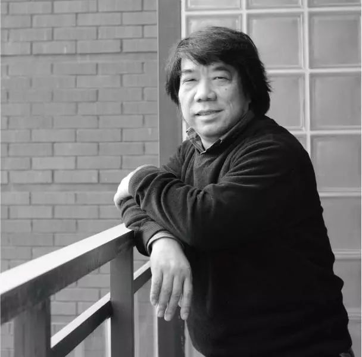
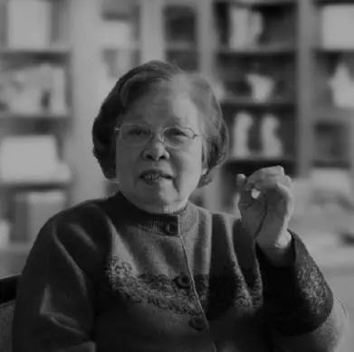
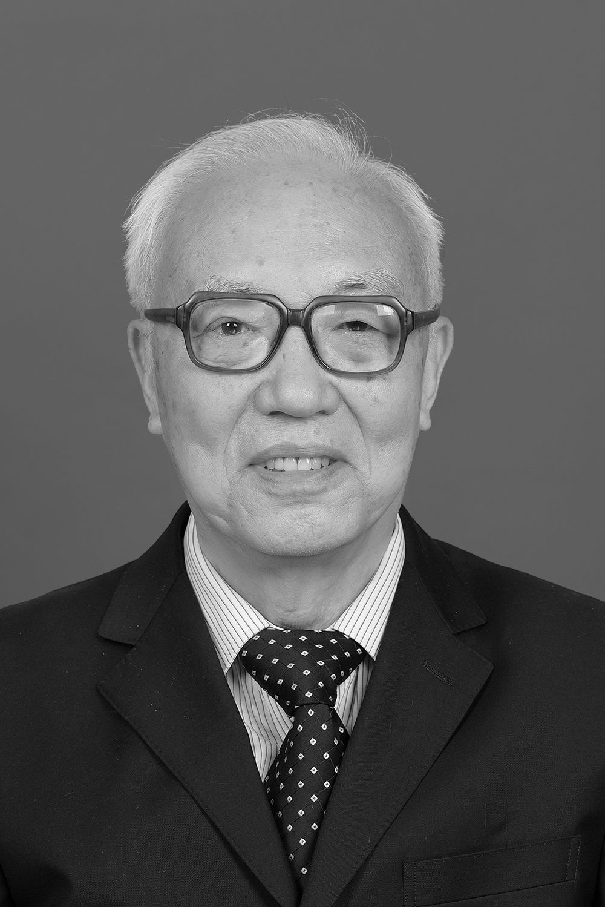

505人确诊11人被免职，监狱该如何防范疫情暴发？
原文链接 备份链接 截至2月20日24时，全国有湖北、浙江、山东五所监狱发生了新冠肺炎感染疫情，这些均为输入性病例，确诊的505人中暂无死亡 图/Unsplash 文 |《财经》记者 王丽娜 俞琴 辛颖 黄姝静 编辑 | 鲁伟 截至2 …
整理 | 河 西
截至2020年2月22日12点，在这次疫情中，累计报告的死亡病例已经达到了2348人。
这些鲜活的生命，在一次突如其来的疫情中倒下了。他们中有普通人，也有院长、导演、院士、画家……很多都是各行各业中的精英，他们的离去是他们所在行业的巨大损失，怎不令人扼腕叹息。
今天，让我们来缅怀这些在疫情中逝去的英才，为他们点上一支蜡烛。
杨晓波

杨晓波（1963年1月-2020年1月27日），湖北天门人，美国俄亥俄大学工商管理硕士，1988年5月加入中国共产党，1988年6月参加工作。
曾任湖北省黄石市委副书记，黄石市市长、长江财产保险股份有限公司董事长。他曾主政黄石，带领这座矿产枯竭的三四线城市摆脱了对资源的依赖，成功实现经济转型；他亦是近期首位因感染肺炎去世的金融业高管，掌舵长江财险六年。2020年1月25日（大年初一），杨晓波确诊为新冠肺炎后入住湖北省人民医院，于1月27日晚上去世。
红凌

红凌（1966年11月-2020年2月7日），美国亚利桑那大学生物化学博士，生前系华中科大三级教授、博士生导师、楚天学者（特聘教授），中国抗癌协会纳米肿瘤学会委员和中国稀有疾病研究联盟全国协调主任。主要研究与人体重大疾病及稀有疾病相关的基因UBIAD1的分子机制。
2020年2月7日，红凌不幸因新冠病毒感染，医治无效在协和医院去世，享年54岁。
林正斌

林正斌（1957年7月-2020年2月10日），中国知名移植专家，华中科技大学同济医学院附属同济医院器官移植科原副主任医师。
林正斌在肾移植术及术后治疗、慢性移植肾肾病的治疗、肾移植术后的各种并发症的处理具有丰富的临床经验，其主持的《国产环孢素赛斯平的实验及临床研究》曾荣获湖北省卫生厅科技进步一等奖。2020年2月10日上午11点，林正斌教授因新冠肺炎抢救无效不幸逝世。
刘寿祥

刘寿祥（1958年4月-2020年2月13日），湖北武汉人，毕业于湖北艺术学院美术系师范专业，曾为中国美术家协会水彩艺术委员会副秘书长，湖北美术学院美术教育系原主任、教授、硕士生导师。
刘寿祥擅长水彩画，作品多次参加全国美展，并被中国美术馆、上海美术馆、江苏省美术馆、深圳美术馆等收藏。作品有《牧牛少年》 《桥》等。
2020年2月13日，刘寿祥因新冠肺炎逝世，享年62岁。
刘筱娴

刘筱娴（1933年5月-2020年2月13日），中国著名预防医学教育家、妇幼卫生专业创始人，全国五一劳动奖章获得者。出生于广州市，祖籍广东台山，1957年毕业并留在武汉医学院（现同济医学院）卫生系任教。华中科技大学同济医学院公共卫生学院教授、研究生导师。
2020年2月13日，因病医治无效不幸在武汉同济医院逝世，享年87岁。
常凯

常凯（？-2020年2月14日），湖北电影制片厂导演、“像音像”对外联络部原主任。他所从事的“像音像”是推进戏曲振兴的国家文化工程，主要致力于将戏曲名家演绎的经典剧目以尽可能完美的影像资料形式加以保护和传承，曾参与电影《我的渡口》、楚剧《可怜天下父母心》等作品的拍摄制作。2020年2月14日，常凯因新冠肺炎医治无效，在武汉市黄陂区去世，享年55岁。
在这次疫情中，常凯一家遭遇灭顶之灾。
1月25日大年初一，常凯的父亲发烧咳嗽，呼吸困难，送至多家医院就治，均告无床位接收，多方求助，也还是一床难求，被迫回家自救。
1月27日，常凯的父亲去世。
2月2日，常凯的母亲去世。
2月14日，常凯和他的姐姐同天去世。他的姐姐就是湖北省武汉市武昌医院梨园街社区卫生服务中心注射室护士柳帆。2020年2月14日18:30，柳帆因患新冠肺炎在全力抢救后无效病逝，享年59岁。
短短17天，常凯家中4人相继离世。
段正澄

段正澄（1934年6月-2020年2月15日），出生于江苏省镇江市。1957年从华中工学院（现华中科技大学）机械系毕业后留校任教，先后担任机械系助教、讲师、副教授，教研室副主任、主任；教授、博士生导师、制造自动化研究所所长、制造装备数字化国家工程研究中心首席科学家。他长期从事机械制造与自动化学科的教学与科研工作，研发了国际首台全身伽马刀，为湖北的经济发展和科技进步做出了突出贡献。2009年当选为中国工程院院士。2020年2月15日，因患新型冠状病毒肺炎在医院逝世，享年86岁。
刘智明

刘智明（1969年-2020年2月18日），湖北十堰人，毕业于武汉大学医学院，主任医师、博士、神经外科专家，生前系武汉市武昌医院院长。
擅长颅脑外伤、颅内肿瘤、脑血管病及椎管内病的诊断和治疗，特别擅长神经外科疾病手术治疗。
2020年2月18日上午10点30分，刘智明因感染新冠肺炎去世。
柯卉兵

柯卉兵（1979年2月-2020年2月19日），出生于湖北黄梅，曾任华中科技大学社会学院教授、工会主席。2月19日凌晨，柯卉兵因患新冠肺炎不幸逝世，年仅41岁。
柯卉兵致力于中国社会福利政策研究，主持国家社科基金项目2项、华中科技大学自主创新基金项目、华中科技大学“教学质量工程”教学研究项目，参与教育部哲学社会科学重大课题攻关项目、国家社科基金一般项目、教育部人文社会科学重点研究基地重大项目等多项国家和省部级课题的研究。曾任中国社会学会社会发展与社会保障专业委员会理事兼秘书长、中国社会保障30人论坛青年学者联盟成员、中国社会保障学会青年委员会委员。
在本次疫情中，华中科技大学也是重灾区，近半个月来，华中科技大学已有5位教授因患新冠肺炎离世。他们分别是：红凌、林正斌、刘筱娴、段正澄和柯卉兵。

征集令
《新民周刊》现面向全国征集新冠肺炎采访对象和真实故事：
如果你是参与抗击新冠肺炎疫情的医护人员或其家属，我们希望聆听你的“战疫”故事，也希望传达你的诉求。
如果你是确诊、疑似患者本人或家属，我们希望了解你和家人如何“抗疫”的过程，让外界了解你的真实经历。
如果你是疫情严重地区的普通市民，我们希望展现你的乐观，并倾听你所需的帮助。
如果你是公共服务人员或各类捐助者，我们希望看到你的“最美逆行”，记录下你的无私。
……
抗击新冠肺炎疫情，我们诚征对疫情了解的社会各界人士，提供相关线索，说出你的故事，让我们用新闻留存这一切。
《新民周刊》新冠肺炎线索征集值班编辑联系方式（添加时请简要自我介绍）：
周一：应 琛 微信号：paulineying0127
周二：金 姬 微信号：gepetta
周三：黄 祺 微信号：shewen-2020
周四：周 洁 微信号：asyouasyou
周五：孔冰欣 微信号：kbx875055141
周六：吴 雪 微信号：shyshine1105
周日：姜浩峰 微信号：jianggeladandong
✳如你需要捐赠物资，可与以下两位工作人员联系:王勇：WangYong-SH 吴轶君：rommy150708（添加时请注明“捐物资”，方便工作人员快速通过您的申请，谢谢。）
新闻是历史的底稿，你们是历史的见证者。期待你的故事、你的线索！

▼
大家还都在看这些
▼
新民周刊所有平台稿件， 未经正式授权
一律不得转载、出版、改编
或进行与新民周刊版权相关的其他行为，违者必究


原文链接 备份链接 截至2月20日24时，全国有湖北、浙江、山东五所监狱发生了新冠肺炎感染疫情，这些均为输入性病例，确诊的505人中暂无死亡 图/Unsplash 文 |《财经》记者 王丽娜 俞琴 辛颖 黄姝静 编辑 | 鲁伟 截至2 …
原文链接 备份链接 有时候半夜突然想到某个可能的漏洞，惊出一身冷汗。 记者 | 黄 祺 抗击新冠肺炎疫情的紧要关头，医院不能失守。 中国疾控中心2月17日的一份研究报告显示，全国已有3019名医务人员感染了新型冠状病毒，其中包括1716 …
原文链接 备份链接 做公益，只凭“鸡血”“热情”，这是不行的。 口述 | 周健（北京感恩公益基金会理事长） 整理 | 王煜 这些天以来，许多事情让我非常揪心。 湖南衡山县的乡镇医生宋英杰，连续十几天在抗疫岗位上工作，过劳去世，因公殉职时 …
原文链接 备份链接 总体而言，港人对待疫情，后来就没有内地那么紧张了。我妈妈讲，她觉得作为一个香港居民，自己最大的感受是彷徨。她抱怨道，在香港，没工开等于没饭吃了；公司起先通知放假到24号，何时复工再议，而现在仍然是等通知的状态。 …
原文链接 备份链接 疫情危机再一次提醒我们，在公共卫生方面，从政府、社会到公众，我们还有很多功课未能完成。 作者 | 朱纪明 程峰（清华大学医学院公共健康研究中心） 编辑 | 徐菁菁 药物和疫苗不一定“特效” 身在疫情中，大众的期待是特效 …